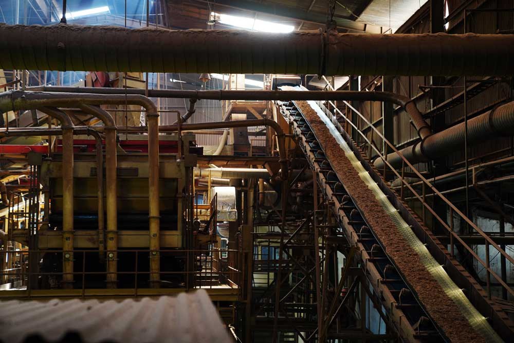
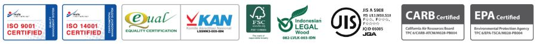

Our Company

The company was established in 1995 strategically located in near Semarang - The capital city of Central Java (Indonesia),
with current shareholder Finance Planning, Ltd. (45%), Sumitomo Forestry, Co., Ltd.(30%), and public (25%).
As a way to prove our commitment in terms of production quality, professionalism in business, and safe manufacturing process both towards internal team as well as to the environment,
we acquired necessary certification as follow:

Product
Particle Board
Even though solid wood is stronger than particle board, in term of cost, particle board is the better choice and more valuable
because it made of wood waste thus it is greener for the environment.
Nowadays with the continuous development of our production technology, RPI Particle Board quality is better than before.
It can resist more temperature and humidity change, stronger against tensile and pressure stress.
RPI Particle Board is also well known for its high quality flat surface and size accuracy. We have been certified by JIS (Japan Industrial Standard) since 2007. JIS Certification requires a high-level quality management system through qualification audit process and also product testing.
This proves that RPI is a high quality particle board manufacturer.